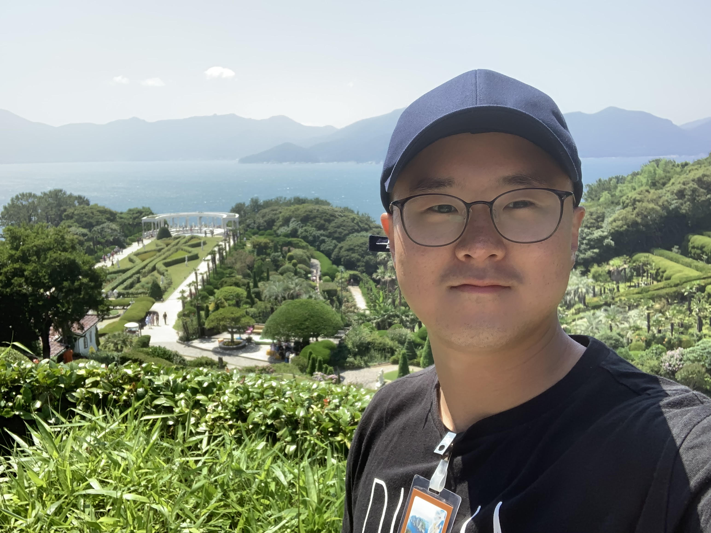
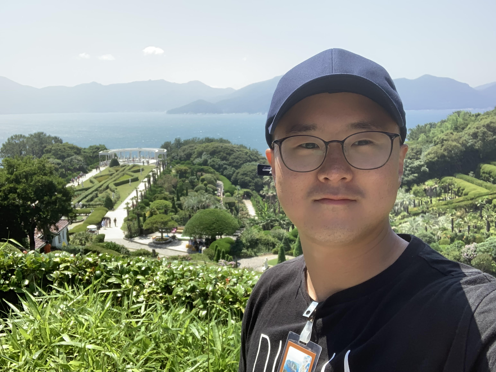
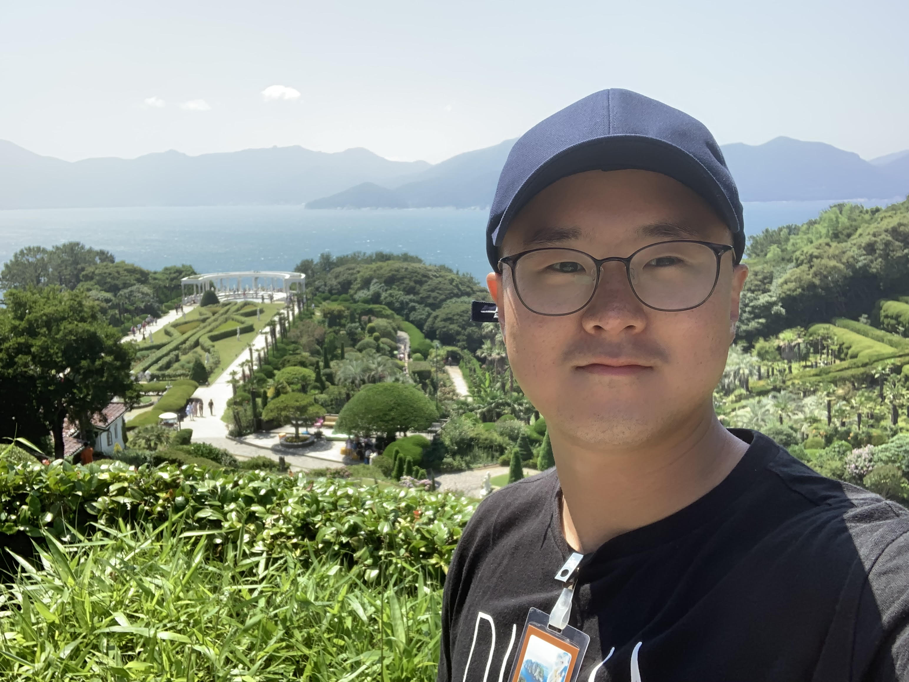
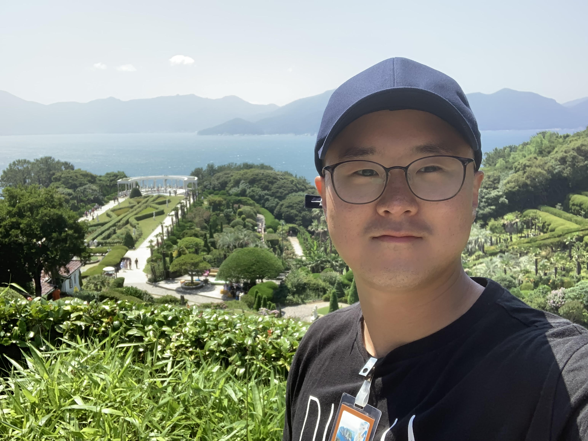

I started my hig school year in the states and struggled a lot at first. Growing up later part of my life in a predominantly Asian neighborhood, where you can get by without speaking a word of English, made it harder for me to get used to speak, read, and write English. Now, I have a undergraduate and graduate degree and getting my second graduate degree. My second graduate degree was not planned. It was a way for me to fill the time gap I had between the deployment and Officer Leadership Course and pursue my intrest in international relations.
Military has been a big part of my life. That is how I attained my citizenship and made a life lasting friends whom I would have never encountered in my civilian life. The military life finally made me feel like I am an American. A big part of the skillset and knowledge I have is from the military as well as my interest in internatoinal relations and economics